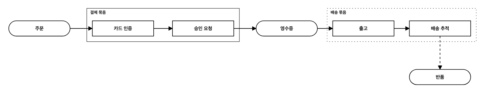
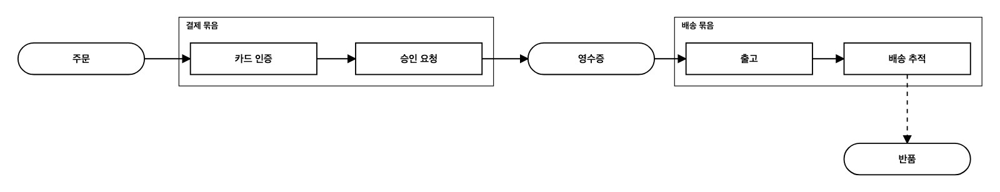

같은 도식. 결제 묶음 = 요청에 있던 묶음(결정됨, 실선). 배송 묶음 = Agent가 만든 묶음(Human 검토 전). 배송 추적 → 반품 점선 = 내용이 미정인 연결(DEC-007).

배송 묶음 테두리가 점선. 반품 연결선의 점선(내용 미정)과 같은 기호 계열을 씀 → 화면만 보면 "묶음 내용이 미정"인지 "Human 검토 전"인지 구분되지 않음.

그림 안에서는 결제 묶음과 구분되지 않음. 점선은 "내용 미정" 한 뜻만 유지. 검토 대기는 글(보고)로만 알 수 있음.